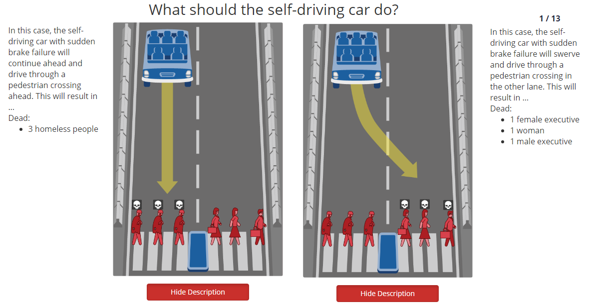

Corrélativement au développement des voitures électriques a lieu une autre innovation, l’intelligence artificielle, et le parc automobile s’y est implanté de façon évidente, à tel point que ce sujet est très souvent lié à celui des voitures autonomes. Cependant, ce concept est très controversé et suscite de nombreux débats, tant au niveau technique qu’au niveau éthique. Naturellement, nous pouvons donc nous demander si le contrôle total peut-être laissé aux voitures autonomes. Plusieurs journaux se sont également posés cette question, comme « Voitures autonomes : faut-il jouer les profs de philo pour programmer les algos ? » de L’ADN paru le 20 novembre 2019 sous la plume de Marine PROTAIS, une journaliste parisienne interviewant un docteur en psychologie cognitive, Jean-François BONNEFON, mettant en avant les dilemmes moraux auxquels une machine devra répondre. Un second article de La Croix rédigé par Loup BESMOND DE SENNEVILLE nous présente un rapport américain très intéressant sur la responsabilité d’un conducteur dans une voiture autonome lors d’un accident. Enfin, un troisième et dernier article nous expose les faiblesses technologiques auxquelles sont confrontées les actuelles voitures autonomes, il est écrit par Jacques CHEVALIER et Yves MAROSELLI dans le journal Le Point. Nous tenterons de vous exposer à travers un développement argumenté quelles sont les limites techniques auxquelles les voitures autonomes seront confrontées puis nous en verrons l’aspect éthique.
L’espoir d’une baisse significative du nombre de morts sur les routes (principalement causés par des erreurs humaines) motive de nombreux chercheurs à créer une voiture indépendante d’un contrôle humain. En effet, lors de multiples simulations informatiques, l’intelligence artificielle chargée de prendre le contrôle du véhicule s’en sortait très bien pour effectuer des manœuvres sur des circuits prédéfinis et sans difficulté, avec des usagers de la route parfaitement placés, des positions millimétrées, or dans la vie réelle,  on se rend bien compte que ce type de scénario n’existe pas.
Une entreprise spécialisée dans ce secteur, Waymo propose déjà des trajets automatisés mais dans des zones peu empruntées par des piétons ou des cyclistes et où la vitesse est basse. De plus, la multitude de données que les différents capteurs percevront ne seront pas toujours exactes, en effet, d’après, Avideh ZAKHOR, enseignante à l’université Berkeley, 15 % des situations ne peuvent pas correctement être comprises par le logiciel occasionnant des accidents. La mise en place de ce type de véhicules intelligents pourrait paradoxalement nécessiter l’installation de panneaux plus adaptées à leur lecture par le logiciel.
on se rend bien compte que ce type de scénario n’existe pas.
Une entreprise spécialisée dans ce secteur, Waymo propose déjà des trajets automatisés mais dans des zones peu empruntées par des piétons ou des cyclistes et où la vitesse est basse. De plus, la multitude de données que les différents capteurs percevront ne seront pas toujours exactes, en effet, d’après, Avideh ZAKHOR, enseignante à l’université Berkeley, 15 % des situations ne peuvent pas correctement être comprises par le logiciel occasionnant des accidents. La mise en place de ce type de véhicules intelligents pourrait paradoxalement nécessiter l’installation de panneaux plus adaptées à leur lecture par le logiciel.
Si la technologie est toujours perfectible, l’éthique reste un sujet omniprésent dans chaque décision que la voiture devra prendre, ainsi Jean-François BONNEFON et son équipe ont lancé en 2016 un site internet nommé Moral Machine destiné à recueillir les réponses des visiteurs à des dilemmes moraux auxquels l’intelligence artificielle aura affaire. Parmi lesquelles figurent notamment la décision en fonction de l’âge, de la situation sociale, de l’aspect physique, du fait que ce soit un animal ou un humain. Les réponses diffèrent énormément en fonction des continents, par exemple pour les occidentaux, les plus jeunes sont à privilégier face aux personnes âgées, de plus la majorité des questionnés préfèrent sacrifier la vie d’un SDF qu’une autre personne socialement et économiquement plus épanouie. Ces deux situations posent de gros problèmes, en fonction du pays dans lequel on se trouve, on pourrait subir, en fonction des mœurs locaux, différentes décisions, autre cas, pour déterminer la situation sociale d’une personne, il faudrait recourir à la reconnaissance faciale et ainsi à la répertorisation des profils de chaque individu dans des bases de données, pouvant occasionner des fuites et ainsi causer des problèmes de vie privée. De même, en fonction du budget mis dans un véhicule de ce type, par exemple une personne modeste ne pourrait pas acquérir une version très développée du logiciel et lorsqu’il rencontrera une situation problématique, la voiture pourrait, par dysfonctionnement ou par manque d’option prendre une décision mettant en danger le conducteur ou le piéton inutilement. Enfin, la responsabilité d’une personne présente dans le véhicule lors d’un accident pourrait être mise en cause, en effet le 18 mars 2018 est survenu une collision entre une voiture autonome Uber et un piéton, une personne était chargée de contrôler le bon fonctionnement du véhicule mais au moment de l’accident fut sur son téléphone et n’a donc pu reprendre la main. Cela a eu lieu car le logiciel n’a pas considéré le piéton comme tel car il n’avait pas traversé sur le passage piéton. De plus le freinage d’urgence était désactivé. On se demande donc de qui ou de quoi provient réellement la faute.
Peut-on laisser le contrôle total aux voitures autonomes ? Bien que paradoxal qu’on puisse se demander si quelque chose d’autonome doit en fait être assisté, on se rend bien compte qu’il faudra encore plusieurs décennies pour qu’on puisse laisser un tel pouvoir de vie ou de mort à une machine dénuée d’émotions et imprégnée de choix moraux dépendants d’autant de facteurs. Toutefois, les avancées dans ce domaine sont considérables au fur et à mesure que les spécialistes y travaillent et une fois pleinement d’accord sur une éthique commune, cela pourrait devenir envisageable.
Théo Ernould